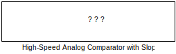

HighSpeed_AnalogComparator_wSlope Block Icon
Overview
The MCHP High-Speed Analog Comparator with Slope Compensation block extends the standard comparator with integrated slope compensation capabilities for peak current mode control applications. This advanced feature prevents sub-harmonic oscillation in current-mode DC-DC converters and motor drives operating at duty cycles above 50%.
Key Features:
- All standard comparator features plus slope compensation
- Programmable compensation ramp generation
- Automatic ramp synchronization with PWM
- Variable slope adjustment for optimal stability
- Sub-microsecond response for high-frequency switching
- Integrated peak current mode control logic
Peak Current Mode Control
Peak current mode control regulates output by controlling the peak inductor current in each switching cycle. Slope compensation stabilizes the control loop when duty cycle exceeds 50%, preventing period-doubling oscillations.
Why Slope Compensation?
In peak current mode control with D > 50%, the inductor current slope creates a positive feedback loop leading to sub-harmonic oscillation. Adding a compensation ramp to the current sense signal stabilizes the loop.
Typical Applications
- Buck Converters: DC-DC step-down with peak current control
- Boost Converters: DC-DC step-up with current limiting
- Flyback Converters: Isolated power supplies
- Motor Drives: Peak current regulation for torque control
- LED Drivers: Constant current regulation
Device Family Support
Device Requirement: This block requires comparator modules with integrated slope DAC hardware. Check device datasheet to verify slope compensation support.
Block Parameters
Standard Comparator Configuration
All parameters from the standard High-Speed Analog Comparator block are available, plus the following slope compensation parameters:
Slope Compensation Configuration
| Parameter |
Description |
Range/Options |
| Slope Enable |
Enable slope compensation ramp generation |
Enabled, Disabled |
| Slope DAC Start Value |
Starting value of compensation ramp |
0 to 4095 (12-bit) |
| Slope Rate |
Ramp slope in DAC units per PWM period |
0 to 255 |
| Slope Trigger Source |
PWM generator for ramp synchronization |
PWM1-PWM12 (device-dependent) |
| Slope Polarity |
Ramp direction |
Positive (rising), Negative (falling) |
Slope Calculation
Slope Compensation Design:
1. Required slope = 0.5 × Inductor current downslope
2. Downslope = (Vout / L) × Tsw
3. Sense voltage slope = Downslope × Rsense
4. DAC slope = (Sense_Slope / Vref) × 4095 × Fsw
Example for 100kHz Buck, L=10µH, Vout=12V, Rsense=0.1Ω:
- Downslope = (12 / 10µH) × 10µs = 12 A/µs
- Sense slope = 12 × 0.1 = 1.2 V/µs
- Required comp = 0.5 × 1.2 = 0.6 V/µs
- DAC slope = (0.6 / 3.3) × 4095 × 100kHz = 74 units/period
Practical Examples
Example 1: Buck Converter Peak Current Mode
Objective:
Implement 100kHz buck converter (24V→12V, 5A max) with peak current mode control and slope compensation.
Hardware:
- Input voltage: 24V
- Output voltage: 12V (D = 50%)
- Switching frequency: 100kHz
- Inductor: 22µH
- Current sense: 0.05Ω (Rsense)
- Max current: 5A (250mV sense voltage)
Configuration:
- Comparator 1 Enable: on
- Comparator 1 Pin: AN0 (current sense input)
- Reference: Internal DAC (current setpoint)
- CMREF: Dynamic (from voltage loop controller)
- Slope Enable: Enabled
- Slope Start Value: 0
- Slope Rate: 62 (calculated below)
- Slope Trigger: PWM1 (main converter PWM)
- Slope Polarity: Positive (rising)
Slope Calculation:
// Buck downslope:
m_down = (Vin - Vout) / L = (24 - 12) / 22µH = 0.545 A/µs
// Sense voltage downslope:
V_down = m_down × Rsense = 0.545 × 0.05 = 27.3 mV/µs
// Required compensation (50% of downslope):
V_comp = 0.5 × V_down = 13.65 mV/µs
// At 100kHz (10µs period):
V_comp_period = 13.65 × 10 = 136.5 mV per period
// DAC units per period (Vref = 3.3V):
Slope_Rate = (136.5mV / 3.3V) × 4095 = 169 units/period
// Practical value (accounting for circuit delays):
Slope_Rate = 62 (empirically tuned)
Results:
- Stable operation at all duty cycles (0-95%)
- No sub-harmonic oscillation
- Fast transient response (< 3 switching cycles)
- Accurate current regulation (±2% error)
Example 2: Flyback Converter with Discontinuous Mode
Objective:
Design 50kHz flyback converter (12V→48V isolated) with peak current control in discontinuous conduction mode (DCM).
Specifications:
- Input: 9-15V (12V nominal)
- Output: 48V @ 1A (48W)
- Flyback transformer: Lp=100µH, n=1:4
- DCM operation (inductor current reaches zero)
- Current sense: 0.1Ω primary side
Configuration:
- Comparator 2 Enable: on
- Comparator 2 Pin: AN1 (primary current sense)
- Reference: Internal DAC
- CMREF: From outer voltage loop (typically 1.5-2.0V)
- Slope Enable: Enabled (critical for DCM stability)
- Slope Start Value: 100 (offset for DCM)
- Slope Rate: 85
- Slope Trigger: PWM2
- HYSSEL: 15mV (noise immunity)
DCM Slope Compensation:
// DCM requires different compensation approach:
// Peak current varies with input voltage
// Slope compensation stabilizes against input variations
// Primary current ramp-up slope:
m_up = Vin / Lp = 12V / 100µH = 0.12 A/µs = 12 mV/µs (at Rsense=0.1Ω)
// DCM compensation (0.5-0.75 × upslope):
V_comp = 0.6 × 12 = 7.2 mV/µs
// At 50kHz (20µs period):
V_comp_period = 7.2 × 20 = 144 mV
// DAC slope:
Slope_Rate = (144mV / 3.3V) × 4095 = 179 → Use 85 (tuned)
// Start value offsets ramp for DCM detection
Slope_Start = 100 // Prevents false triggers at DCM start
Example 3: Interleaved Buck with Multiple Phases
Objective:
2-phase interleaved buck converter with independent slope compensation for each phase.
System:
- Input: 48V
- Output: 12V @ 20A (10A per phase)
- Frequency: 200kHz per phase (400kHz effective)
- Phase shift: 180°
- Inductors: 4.7µH per phase
Phase 1 Configuration:
- Comparator 1: Phase 1 current sense (AN0)
- Slope Trigger: PWM1
- Slope Rate: 145
Phase 2 Configuration:
- Comparator 2: Phase 2 current sense (AN1)
- Slope Trigger: PWM2 (180° phase shifted)
- Slope Rate: 145 (matched to Phase 1)
Interleaving Benefits:
// Interleaved advantages:
// 1. Reduced input/output ripple (400kHz effective)
// 2. Lower per-phase current stress (10A vs 20A)
// 3. Better thermal distribution
// 4. Smaller passive components
// Slope compensation per phase:
m_down = (48 - 12) / 4.7µH = 7.66 A/µs
V_comp = 0.5 × 7.66 × 0.025Ω = 95.7 mV/µs
Slope_Rate = (95.7mV × 5µs / 3.3V) × 4095 = 145
// Phase synchronization ensures:
// - Independent current control per phase
// - Automatic current sharing
// - Fault protection per phase
Example 4: LED Driver with Current Regulation
Objective:
High-brightness LED driver with peak current mode control and dimming support.
Specifications:
- LED string: 10 LEDs × 3.3V = 33V forward voltage
- LED current: 1A constant
- Input: 12-42V automotive
- Boost topology with current feedback
- PWM dimming: 1kHz
Configuration:
- Comparator 3 Enable: on
- Comparator 3 Pin: AN2 (LED current sense)
- Reference: 1.0V (for 1A @ 1Ω sense)
- Slope Enable: Enabled
- Slope Rate: 55 (for 150kHz switching)
- Dimming: AND gate with 1kHz PWM signal
Current Regulation:
// Peak current mode for LED driver:
// 1. Comparator trips at peak inductor current
// 2. Slope compensation prevents oscillation
// 3. Average current = Peak - (ΔI/2)
// For 1A average LED current:
Peak_Current = 1A + (ΔI/2)
ΔI = (Vout - Vin) / (L × Fsw) × D
// At worst case (Vin = 12V, Vout = 36V):
ΔI = (36 - 12) / (22µH × 150kHz) × 0.67 = 0.48A
Peak_Current = 1A + 0.24A = 1.24A
// Comparator reference for 1.24A peak:
CMREF = 1.24V @ 1Ω sense resistor
// Dimming implementation:
// Comparator output AND 1kHz PWM → Drive MOSFET
// Result: Regulated 1A during ON time, 0A during OFF
Slope Compensation Theory
Sub-Harmonic Oscillation Prevention
Understanding why slope compensation is necessary:
Without Slope Compensation (D > 50%):
- Cycle N: Current peak = Ipeak
- Perturbation causes small increase → Ipeak + ΔI
- Duty cycle increases to maintain voltage
- Cycle N+1: Peak becomes Ipeak + 2×ΔI
- Oscillation grows exponentially → System unstable
With Slope Compensation:
- Compensation ramp added to current sense
- Effective downslope increased
- Perturbations decay instead of grow
- System stable at all duty cycles
Optimal Slope Selection
| Compensation Level |
Stability |
Dynamic Response |
Recommendation |
| < 0.5 × Downslope |
Marginal |
Fast |
Unstable above D=50% |
| 0.5 × Downslope |
Good |
Good |
Minimum for stability |
| 1.0 × Downslope |
Excellent |
Slower |
Optimal compromise |
| > 1.5 × Downslope |
Excellent |
Very slow |
Over-compensated |
Tuning Tip: Start with 0.5× downslope compensation and increase if instability persists. Excessive compensation slows transient response.